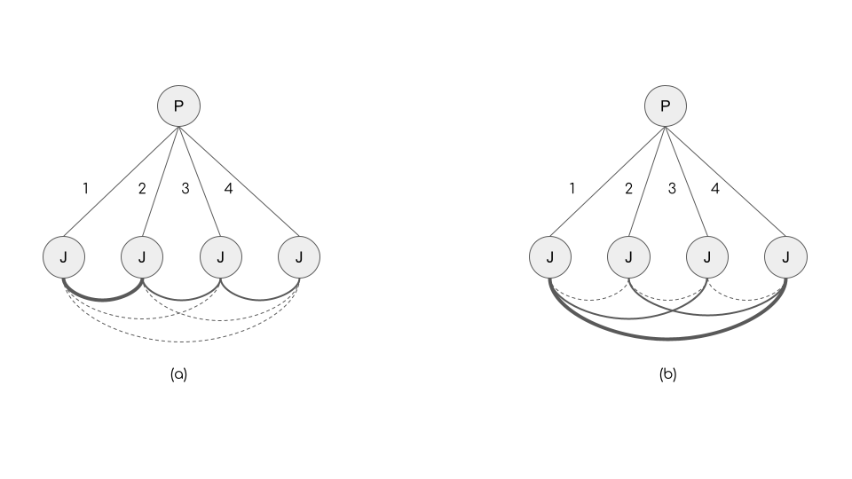

Temporal Cultural Hole Bridging
Introduction
In a previous discussion I point to a forthcoming chapter where I argue for the intimate link (conceptually and in terms of formalization) between recent work on categories in the organizations literature and the developing line of research on cultural holes in the culture and networks tradition. At the end of the chapter, I noted that one of the areas where cultural holes work can move forward is by incorporating a dynamic or temporal component. The basic cultural holes argument, noting that people’s—or organizations; see Silver et al. (2022)—positions in the socio-cultural structure matter for various outcomes relies essentially on a model of comparative statics.
However, if we consider a person’s portfolio of connections to a set of cultural categories or objects—their “cultural ego network”—at any point in time, it is clear that this cross-sectional outcome is the result of some time-ordered process of adding links. That is, while this information is usually absent in most setups, links in two-mode cultural networks do have a hidden attribute (e.g., “age”). Given this attribute, it is possible to order the links from oldest to youngest.
Accounting for time in cultural holes
I think that the next step is to develop the cultural holes argument so as to account for this temporal component. This has not been done yet, but I think a useful starting point, is a wonderful paper by Ming Leung published in American Sociological Review in 2014. The basic empirical context of the paper is the freelance work industry. While Leung’s paper is not framed according to the language and concepts of the cultural holes imagery, it is not hard to do the translation.
Consider a set of freelance workers, each with a job history. At some cross-section, we observe a two-mode network (\(\mathbf{A}\)) of dimensions \(P \times J\) where \(P\) is the number of freelancers and \(J\) is the number of categorically defined jobs. We can project the jobs into a one-mode network \(\mathbf{JJ}\) using the familiar formula due to Breiger (1974):
\[ JJ = A^TA \tag{1}\] As I noted in the previous discussion, once we have \(JJ\), we have the ingredients to compute most measures of similarity between jobs (and by implication distance in some categorical space).
In the 2014 paper, Leung computes an asymmetric similarity measure (p. 145) as follows:
\[ S_{ij} = \frac{JJ_{ij}}{J{ii}} \tag{2}\] Where \(JJ_{ij}\) is the number of freelancers who do jobs \(i\) and \(j\) and \(JJ_{ii}\) is the number of freelancers who do job \(i\).
The particular measure of similarity used in the paper is less important than Leung’s core argument. Now consider the standard (non-temporal) cultural holes argument. Here, we would look at the cumulative two-mode network at a given time, and say that freelancers bridge cultural holes to the extent that their “cultural ego network” (where the “alters” are types of jobs) is composed of jobs which are relatively dissimilar to one another. Conversely, freelancers whose cultural ego networks is composed of mostly similar jobs (based on Equation 2) have high “constraint” in this context and don’t bridge cultural holes.
Now moving to the “audience” (potential employers) side, it could be that employers in this context prefer “focused” identities so that bridging cultural holes is bad. Or it could be like Silver et al. (2022) find, that a moderate amount of bridging is best, or it could be the precise functional form depends on industry, metro-context, and so forth–as Silver et al. (2022) also find.

Regardless, all these arguments boil down to comparative statics, and moreover, ignore the temporal information embedded in the network. By including time, Leung’s argument puts a twist on this standard cultural holes formulation. The basic idea is that, in the empirical context of freelancing, the particular sequence with which links are added, interacts with the pairwise similarity between jobs, so that it matters how you ended up bridging cultural holes in terms of this sequencing.
Figure 1 provides and example. In the figure, nodes labeled \(P\) are people and nodes labeled \(J\) are jobs. The number next to each edge indicates the time at which it was added. In the job \(\times\) job alter network, the thickness of the line is proportional to the similarity (“tie strength”) between jobs (the figure assumes a symmetrical measure of distance for simplicity). Note that in the cross-section, these two cultural networks are equivalent. Both are composed of one strong tie, two medium strength ties, and three weak ties.1 So the level of cultural hole bridging, however we measure it, is the same.
Leung argues that they are not the same. In the case of Figure 1 (a), we can see that when the tie to the second job was added, this job was very similar to the first job. Then the person added a third tie to a job that was moderately similar to the second job and dissimilar from the first job. Then the fourth tie was to a job that was once again moderately similar to the previously held job and dissimilar to the first two jobs. The pairwise similarities between jobs end up being time-ordered so that they are stronger for temporally close jobs and weaker for temporally distant jobs.
Leung argues that pattern Figure 1 (a) of temporal cultural hole bridging, where dissimilarity is gradually increased over time is more likely to be perceived by employers as typical of a “Renaissance” person. That is, a person who likely has strong capabilities on different types of jobs.
This is different from Figure 1 (b). Here we see that ties added in close proximity go to weakly related jobs. Then the last tie goes to a job very similar than the first. So while Figure 1 (b) has as much non-temporal cultural hole bridging as Figure 1 (a) the temporal sequence in which the bridging was done is more likely to be perceived by audiences as that of an “erratic dilettante” unlikely to be good at any of the jobs.
Leung finds support for these hypotheses (although, once again, he does not frame his paper in terms of the cultural holes argument), showing that indeed “erraticism” (a measured by the cumulative sum of the distances—one minus the similarities—between consecutive jobs for a given person in the temporal two-mode network) has a positive effect on winning a bid until a moderate point, at which the effect is steep and negative: Highly erratic workers are less preferred by employers. So the sequencing via which people bridge cultural holes matters.
Conclusion
While developed in the case of jobs and careers in the freelancing industry, recasting Leung’s arguments in terms of temporal cultural hole bridging reveals its broader implications. For instance, Leahey & Moody (2014) show that cultural hole bridging in scientific careers could be good. But, given the previous, it is clear that the order in which scientists “stretch” out by adding specialties may matter. It is likely that a scientist who ends up being perceived as a renaissance person follows pattern Figure 1 (a), so they gradually stretch and temporally order the amount of stretching.
The argument could also be used to understand cultural tastes—where the cultural holes argument has only been made in terms of comparative statics (Lizardo, 2014). Accordingly, different patterns of cultural hole bridging are likely to differentiate different types of omnivores based on their life course history and interaction with genres and cultural objects (Lembo, 2017). Bourdieu (1984) for instance, famously argued that you can get (a version of) “omnivorousness” (although he obviously didn’t call it this) by acquiring an aesthetic disposition for the standard cultural goods (the ones that have been legitimated as art by the usual institutions), and then “extending” to the ones that are on their way to legitimation, and then extending to the ones that are less legitimate, and so forth (see Lizardo (2018) for a re-statement of this argument and Childress et al. (2021) for supportive empirical evidence). This is clearly a story that can be formalized as a temporal cultural hole bridging argument applicable to cultural tastes, although very likely not the only one.
References
Bourdieu, P. (1984). Distinction. Harvard University Press.
Breiger, R. L. (1974). The duality of persons and groups. Social Forces, 53(2), 181-190.
Childress, C., Baumann, S., Rawlings, C. M., & Nault, J. F. (2021). Genres, objects, and the contemporary expression of higher-status tastes. Sociological Science, 8, 230-264.
Lembo, A. (2017). Three chords & [somebody’s] truth: Trajectories of experience and taste among hard country fans. Poetics, 60, 62-75.
Leung, M. D. (2014). Dilettante or renaissance person? How the order of job experiences affects hiring in an external labor market. American Sociological Review, 79(1), 136-158.
Lizardo, O. (2014). Omnivorousness as the bridging of cultural holes: A measurement strategy. Theory and Society, 43(3), 395-419.
Lizardo, O. (2018). Bourdieu, Distinction, and Aesthetic Consumption. The Oxford Handbook of Consumption.
Leahey, E., & Moody, J. (2014). Sociological innovation through subfield integration. Social Currents, 1(3), 228-256.
Silver, D., Childress, C., Lee, M., Slez, A., & Dias, F. (2022). Balancing categorical conventionality in music. American Journal of Sociology, 128(1), 224-286.
Footnotes
The number of ties among jobs \(m=6\) because there are four jobs and \(4(4-1)/2 = 6\)).↩︎